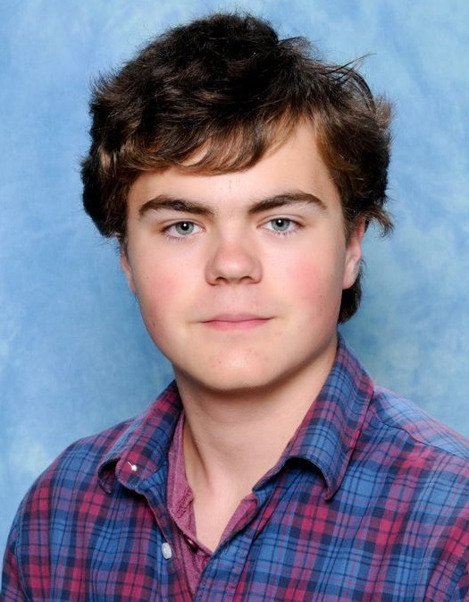

Michael Sekatchev
HOME
RESUME
CONTACT

Click to hide photo
Education
Kerrisdale Annex Canada
Ecole Internationale France
IGCSE British Exams
DELF French Language
Online
Extras
.
Work Experience
ITER Vacuum Traineeship
Yearbook Club
.
Activities
Hobbies Website
Bicycles
Programming/Computers
Rubik's Cubes
Tennis
Table Tennis
Horse riding
Rowing
Kayaking
Ballroom Dancing
Conservatory of Music
Extras
Resume
Click
here
to download resume, or if resume not displayed. Contact me for a full version.